THE PRISONER WINE COMPANY / Napa, California
Brand Evolution & Innovation
Strategy / Brand / Innovation / Experience
A broad portfolio of work spanning new-product development and launch, brand evolution, agency management and content production. Projects included Thorn, Cuttings and Blindfold as well as development of the brand’s digital presence.
THE WORK
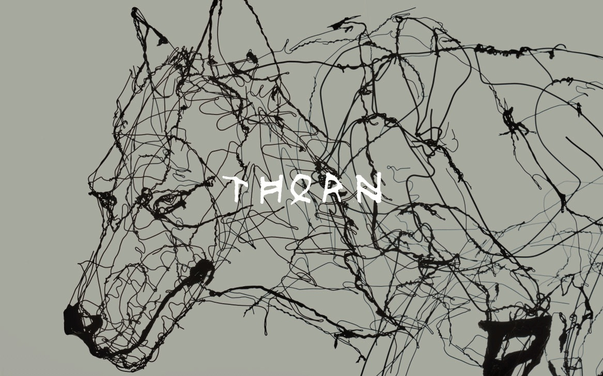
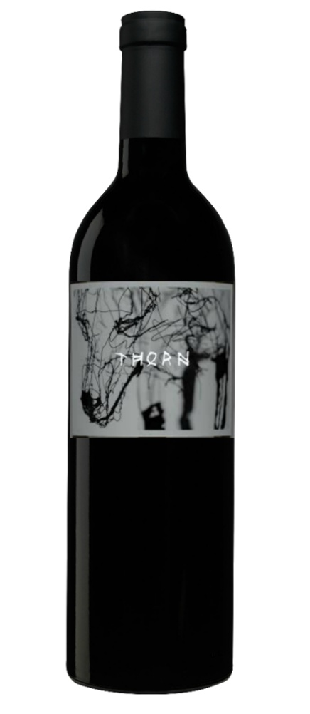

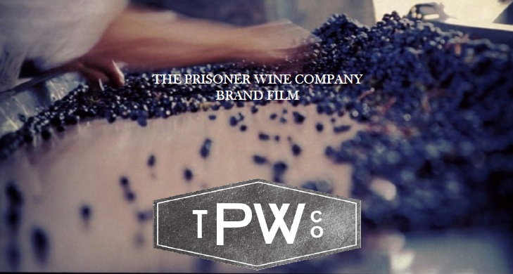
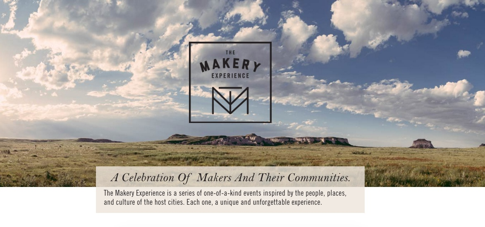

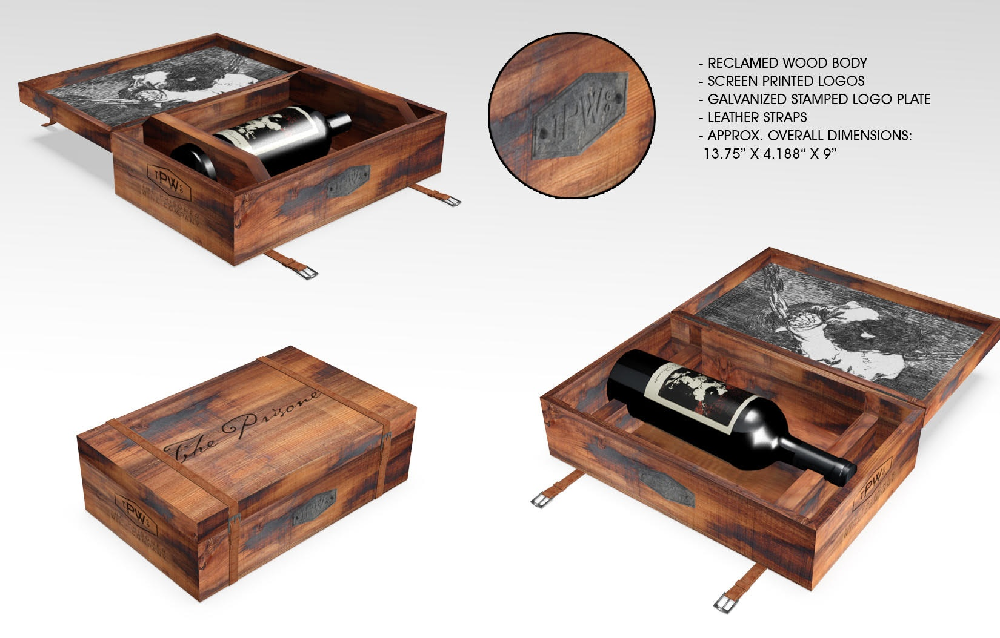
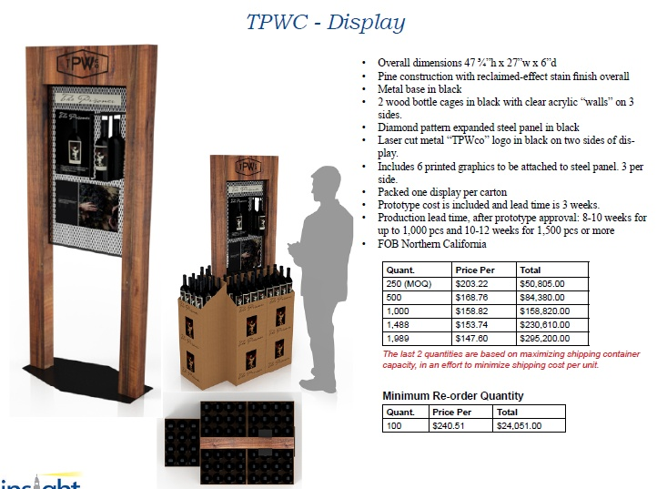
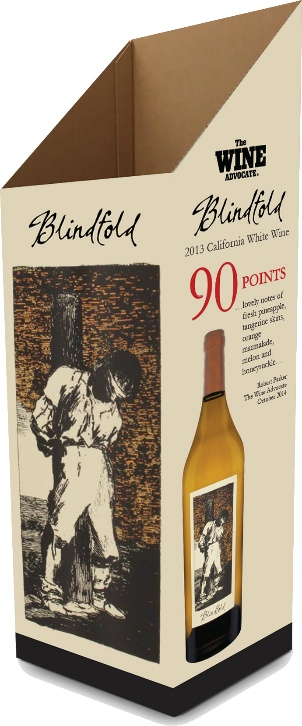
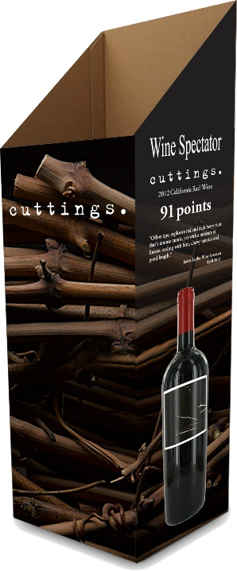
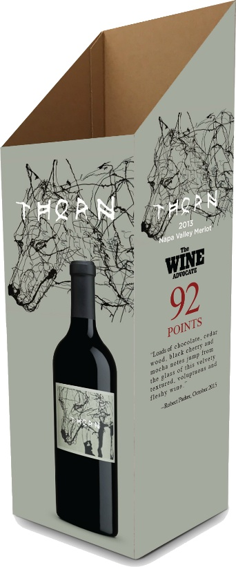
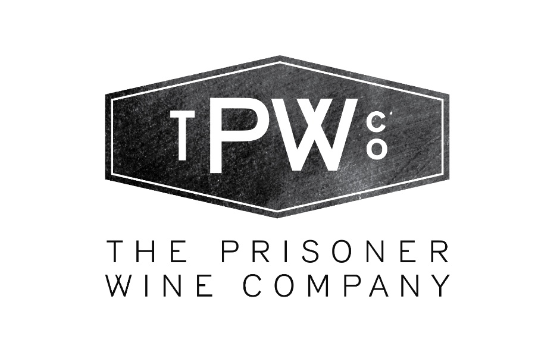
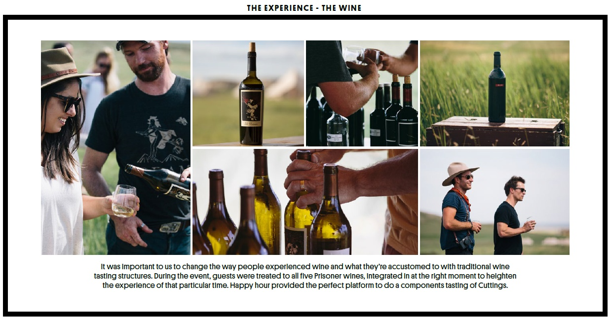
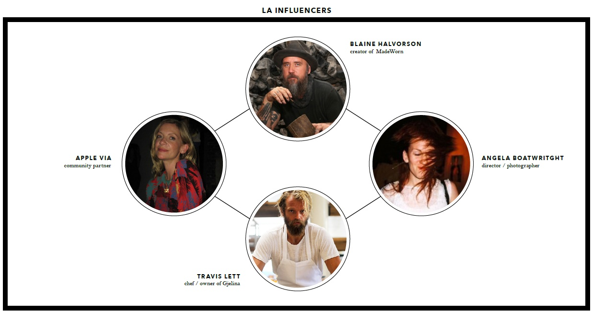
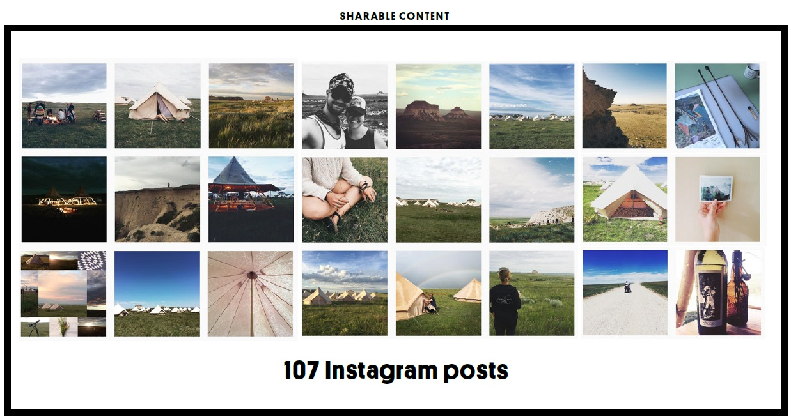
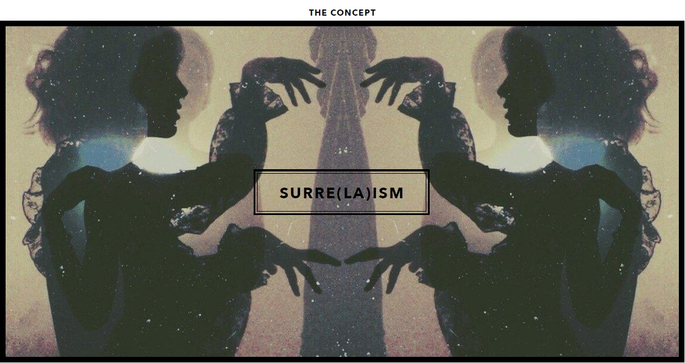
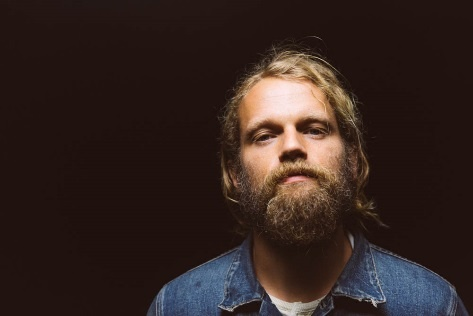
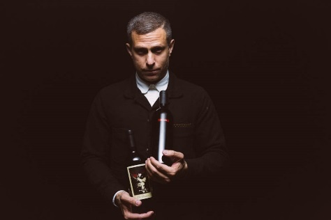
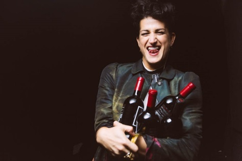
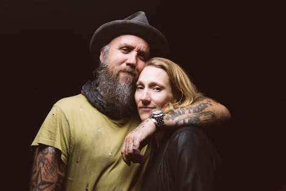
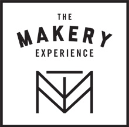